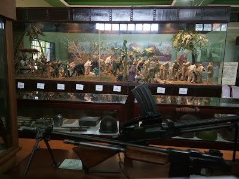
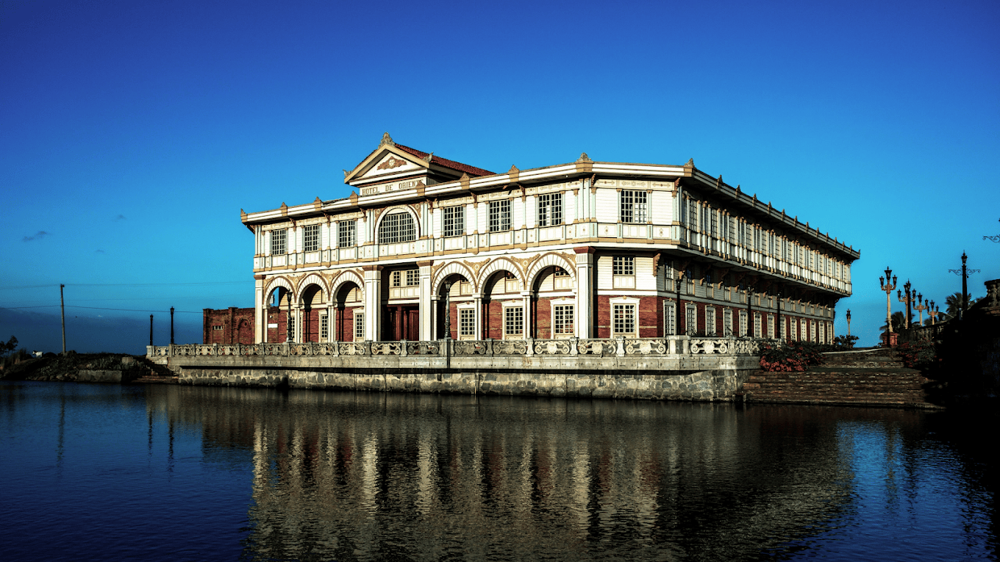
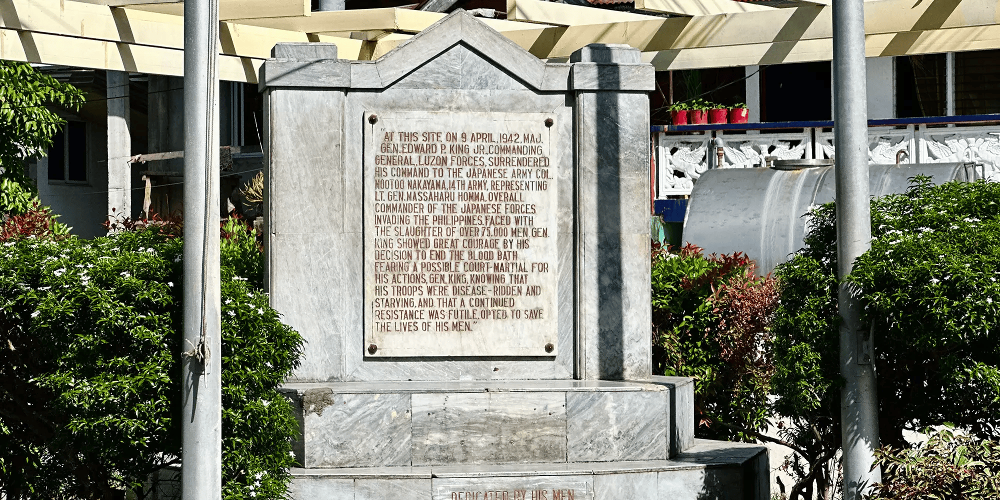

Preserving artifacts and the soul of Bataan.

Featuring dioramas and relics that tell the story of the defenders of Bataan.
Visit Gallery →
A premier living museum showcasing restored heritage houses from the Philippines.
Book a Tour →
An open-air museum marking where the final negotiations took place.
Learn More →